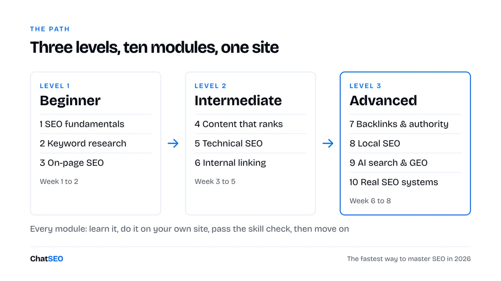
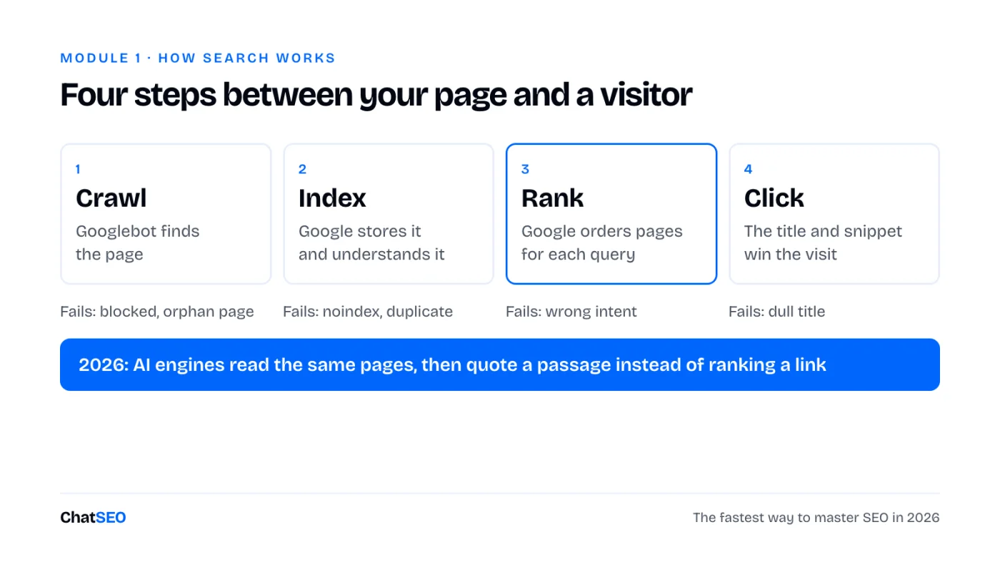
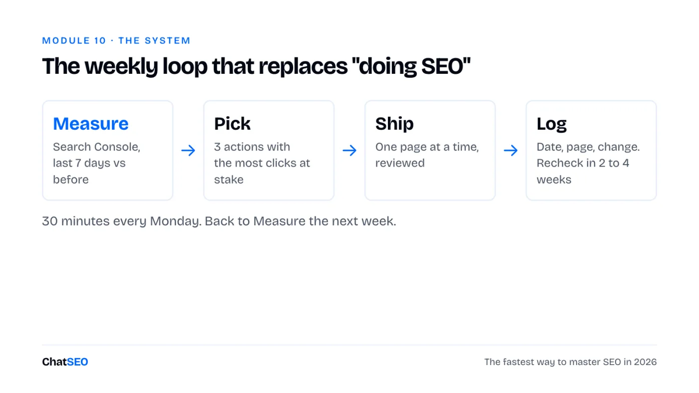

ChatSEO Playbooks / Free, nothing gated
The Fastest Way to Master SEO in 2026
TL;DR
- Most people do SEO without ever learning how it works. This is a step-by-step path from beginner to advanced, organised by level, so you always know what to learn next.
- Ten modules in three levels. Each one has what to learn, an exercise on your own site, a skill check, and the ChatSEO prompt that does the work.
- It starts the day you open Google Search Console for the first time and ends with the weekly system real SEO teams run.
- About 3 hours a week for 8 weeks. The plan is at the bottom.

How the path works
You don't learn SEO by reading about it. You learn it by doing each step once on a real site, in the right order, and checking that you understood it before you move on.

Every module has the same four parts:
- Learn. The few ideas that matter, without the jargon.
- Do. One exercise on your own site, with free tools.
- Skill check. If you can do this without the page open, move on.
- Prompt. The ChatSEO prompt that does the same job on your real data, so you can compare your answer with it.
No site yet? Use a friend's, a client's, or any small business site you know. You only need read access to its Search Console for most exercises.
Level 1 · Week 1 to 2
Beginner: how Google works and what people search
By the end you can read Search Console, find the keywords a page should target and write a title that earns the click.
1SEO fundamentals
SEO is getting your pages shown, and clicked, when people search for what you sell. Between your page and a visitor there are four steps. Every SEO problem you will ever meet breaks one of them.

Learn
- Clicks are visits from Google. Impressions are how often you were shown. CTR is clicks divided by impressions. Position is your average rank.
- Google ranks pages, not websites. Each page competes for its own queries.
- Three things decide most rankings: the page matches what the searcher wants, Google can crawl and trust it, and other sites point to it.
- Brand searches (your name) and non-brand searches (what you sell) tell different stories. Growth is in non-brand.
Do: open Search Console for the first time
- Go to search.google.com/search-console, add your site as a Domain property and verify it with the DNS record your host shows you.
- Open Performance, set the date to the last 3 months, tick all four metrics.
- Click the Queries tab and sort by impressions. Write down your top 10 queries and their position.
- Click the Pages tab. Write down the 5 pages that bring the most clicks. This is your baseline. Date it.
I'm learning SEO on [site URL]. Read my Search Console for the last 3 months and explain it to me like a beginner: total clicks, impressions, average CTR and position, split brand and non-brand. Then show my 10 queries with the most impressions and my 5 pages with the most clicks in one table, and tell me in 3 sentences what this says about my site. Only use numbers from my data. If something is missing, say so.

2Keyword research
A keyword is worth targeting when three things line up: people search it, the searcher could become a customer, and you have a realistic chance to rank. Beginners chase volume. Pros chase the overlap.
Learn
- Search intent is what the searcher wants: to learn ("how to"), compare ("best", "vs"), buy ("price", "buy"), or find something nearby ("near me"). The page has to match it.
- Long-tail keywords (4+ words) have less volume, less competition and clearer intent. Start there.
- The fastest keywords are the ones you already rank for on positions 5 to 20. Search Console shows them for free.
- Check the top 5 results before you pick a keyword. If they're all huge brands or a different page type, move on.
Do
- In Search Console, filter Performance by Position greater than 4. Sort by impressions. These are queries Google already tests you on.
- Pick 10. For each, Google it in a private window and note the page type in the top 5 (guide, list, product, local).
- Tag each with its intent and keep the ones where your page type matches.
Find the 20 keywords I should target first on [site URL] for [what I sell]. Start from queries I already rank for on positions 5 to 20 in Search Console, then add close variants with real search volume. For each: volume, my current position, search intent (learn / compare / buy / local), the page type the top 5 use, and which of my pages should target it. One table, sorted by how fast it could bring clicks. Do not invent volumes or positions.
3On-page SEO
On-page SEO is everything on the page itself that tells Google, and the searcher, what it's about. It's the fastest lever you have: you can change a title this afternoon and see the effect in two weeks.
Learn
- Title tag: under ~60 characters, the main keyword at the start, a reason to click at the end. It's the blue link in Google.
- Meta description: under ~155 characters. It doesn't rank you, it sells the click.
- One H1 that matches the title's intent, then H2s shaped like the questions people ask.
- URL: short, readable, with the keyword. Images: compressed, with descriptive alt text.
- The answer in the first lines, not after three paragraphs of intro.
Do
- Take the 3 pages with the most impressions and a CTR under 2 %.
- For each, find the query bringing the most impressions (Performance, filter by page, Queries tab).
- Rewrite the title and meta description for that query. Log the date and the old version.
TITLE [Main keyword]: [specific benefit or angle] ([year / number / proof]) e.g. Running Shoes for Flat Feet: 9 Pairs Tested on 300 km (2026) META DESCRIPTION [What the page gives] for [who]. [One proof or detail]. [What they can do next]. e.g. The 9 running shoes we tested for flat feet, ranked by support. Real mileage, real prices. Find your pair in 2 minutes.
Audit the on-page SEO of my 10 pages with the most impressions on [site URL]. For each: current title, meta description and H1, the query bringing the most impressions, the CTR, and a rewrite of the title and meta description that matches that query. Explain each change in one line so I learn the pattern. Show current vs proposed side by side and wait for my approval before changing anything. Only use numbers from Search Console.

Level 2 · Week 3 to 5
Intermediate: pages that rank and a site Google trusts
By the end you can write a page built to rank, fix the technical issues that matter, and send authority to the pages that need it.
4Writing content that ranks
A page ranks when it answers the query better than the 10 already there. "Better" doesn't mean longer. It means the right format, the answer first, and something the others don't have.
Learn
- Write the brief before the article: keyword, intent, page type, the subtopics the top 5 cover, the one thing you'll add.
- Answer the question in the first two sentences under each heading, then give the detail.
- Information gain: your data, your test, your screenshot, your example. Google and AI engines both reward what isn't elsewhere.
- Update an old page before you write a new one. It already has history with Google.
Do
- Pick one keyword from module 2 that has no page yet.
- Open the top 5 results. List the headings they all share, and the one question none of them answers well.
- Fill the brief template below, then write the page.
Target keyword: Search intent: learn / compare / buy / local Page type (from top 5): Reader: who they are, what they already know The answer in 2 lines: Headings (as questions): 1. 2. 3. What the top 5 miss: my data / test / example Internal links in: 3 pages that will link here Internal links out: 2 pages this one links to Call to action:
Write a content brief for "[keyword]" on [site URL]. Analyse the top 5 Google results: page type, length, the headings they share and the questions they leave unanswered. Then give me the brief: intent, page type, headings as questions, the answer to put in the first two sentences, what my page should add that they don't, and 3 existing pages of mine that should link to it. Do not write the article yet. Only use what the results and my site show.
5Technical SEO
Technical SEO makes sure Google can crawl, index and load your pages. You don't need a 200-line audit. You need the handful of issues that stop your important pages from being found.
Learn
- Indexing: Search Console's Pages report tells you which URLs are in Google and why the others aren't.
- Sitemap: a list of the URLs you want indexed. Only canonical, live pages belong in it.
- robots.txt tells crawlers what not to visit. One wrong line can hide your whole site, or block AI crawlers like GPTBot.
- Canonical tags tell Google which version of a duplicate page counts.
- Core Web Vitals on mobile: LCP under 2.5 s, INP under 200 ms, CLS under 0.1.
Do
- Search Console → Pages. Read every reason under "Why pages aren't indexed". Check none of your important pages are in there.
- Search Console → Sitemaps. Submit yours if it isn't there.
- Open yoursite.com/robots.txt and read it line by line.
- Run your top page through PageSpeed Insights on mobile.
Run a technical SEO check on [site URL]: indexing status of my top 20 pages, sitemap, robots.txt (including AI crawlers like GPTBot and PerplexityBot), canonicals, redirects, broken internal links and Core Web Vitals on mobile. Return only the issues that affect pages bringing traffic, ranked by impact, and explain each one in plain words with the fix. Do not list anything you cannot confirm from the crawl or Search Console.
Why a course isn't enough. This path teaches you what to look for. It can't read your Search Console, crawl your site or tell you which of your pages to fix first this week. ChatSEO does, on your real data, explains why, and pushes the fixes you approve to WordPress or Shopify. The first 7 days are free.

6Internal linking
Internal links are the links between your own pages. They tell Google which pages matter and how topics connect, and they pass authority from your strong pages to the ones that need a push. It's the most underused lever in SEO because it's free.
Learn
- An orphan page has no internal links pointing to it. Google treats it as unimportant.
- Anchor text (the clickable words) tells Google what the target page is about. "Click here" wastes it.
- Topic clusters: one pillar page per core topic, supporting pages that link to it and to each other.
- Link from pages that already get traffic or backlinks to pages stuck on positions 8 to 20.
Do
- Pick one page stuck on positions 8 to 20 for a query that matters.
- Google
site:yoursite.com "topic"to find your pages that mention the topic. - Add 3 to 5 links from those pages to it, with descriptive anchors. Log the date.
Map the internal linking of [site URL]. List my orphan pages and the pages with fewer than 3 internal links in. Then, for my 5 pages on positions 8 to 20 with the most impressions, suggest 3 to 5 internal links each: the source page (prefer pages with traffic), the exact sentence to place the link in, and the anchor text. Wait for my approval before changing anything. Only use pages and numbers that exist.
Level 3 · Week 6 to 8
Advanced: authority, local, AI search and the system
By the end you can earn links, win local results, get named by AI assistants and run SEO every week like a team does.
7Backlinks and authority
A backlink is another site linking to yours. Google reads it as a vote. One link from a relevant, trusted site beats a hundred from directories nobody visits. In 2026 the same mentions also decide which brands AI engines quote.
Learn
- Relevance first, then trust, then traffic. A niche blog in your industry beats a big generic site.
- Start with links you can claim: partners, suppliers, clients, unlinked mentions of your brand.
- Then links you earn: original data, tools, guest posts, expert quotes for journalists.
- Never buy links in bulk. One spammy pattern can cost more than a year of work.
Do
- List 10 businesses you already work with. Check whether each one links to you.
- Google your brand name in quotes and find sites that mention you without linking.
- Send 5 short, polite emails asking for the link.
Analyse the backlinks of [site URL] against [competitor 1] and [competitor 2]. Show my 10 strongest referring domains, then the 20 relevant domains that link to my competitors but not to me, each with why it's relevant and the easiest way to get a link (claim, guest post, resource page, quote). End with a 4-week outreach plan. Flag any toxic pattern in my profile. Only use real backlink data.
8Local SEO
If you serve customers in a place, half your searches happen on the map. Local SEO wins the map pack, the local organic results, and the directories AI assistants read when someone asks "best [service] in [city]".
Learn
- Your Google Business Profile is the single biggest local factor: right category, complete info, photos, reviews.
- NAP (name, address, phone) must match exactly everywhere it appears.
- One service page per service, and one location page per city you really serve.
- Reviews: a steady flow, answered, with the service and city mentioned naturally.
Do
- Open your Business Profile. Check the primary category against your top 3 map competitors.
- Google your business name and compare your NAP on the first 10 directories you see.
- Ask your 5 latest happy customers for a review.
Run a local SEO audit for [business name] in [city], site [site URL]. Compare my Google Business Profile category, reviews and completeness with the top 3 map results for "[service] [city]". Check my name, address and phone across the main directories and list every mismatch. Tell me which service or location pages are missing. End with the 5 fixes in order of impact. Only report what the data shows.
9AI search and GEO
Your buyers also ask ChatGPT, Perplexity, Gemini and Google's AI Overviews. Those answers name a few brands and cite a few sources. GEO (generative engine optimisation) is getting your brand into that answer.
Learn
- Google ranks a page. AI engines quote a passage. Short, direct, factual passages get lifted.
- AI engines repeat what trusted sites say about you: reviews, comparisons, Reddit, industry lists. Being mentioned there matters as much as your own site.
- Name your brand the same way everywhere, with the same one-line description.
- Let AI crawlers in (module 5) and track the questions, not keywords.
Do
- Write the 10 questions a buyer would ask an AI before choosing a business like yours.
- Ask them in ChatGPT and Perplexity. Note who is named and which sources are cited.
- Pick the source cited most often and work out how to appear on it.
Check my AI search visibility for [brand] in [category / city]. Write the 10 questions a buyer would ask an AI assistant, then report for each: whether my brand is mentioned, which competitors are, and which pages or sites are cited as sources. End with the 5 sources cited most often and what I'd need to appear on each. Only report what the results show.
10Real-world SEO systems
Knowing SEO and doing SEO are different things. Real teams don't do "an SEO project". They run a short loop every week, ship small changes, log them, and let the data decide the next one.

Learn
- One change per page at a time, logged with a date. Otherwise you never know what worked.
- Wait 2 to 4 weeks before judging a change. Rankings move slowly, then all at once.
- Prioritise by clicks at stake: pages with impressions but no clicks first, new content last.
- A one-page monthly report keeps you honest: what moved, what you shipped, what's next.
Do
- Create a change log: date, page, what changed, why. Back-fill everything you did in modules 1 to 9.
- Block 30 minutes every Monday. Run the loop once this week.
SEO REPORT · [month] 1. Numbers (vs last month) Non-brand clicks: [n] ([+/- %]) Impressions: [n] ([+/- %]) Organic conversions: [n] ([+/- %]) Named in AI answers: [x] of [10] buyer questions 2. What moved Up: [page], [query], [why] Down: [page], [query], [why] 3. What we shipped [date] · [page] · [change] 4. Next month, in order 1. 2. 3.
Give me this week's SEO action list for [site URL]: compare the last 7 days with the 7 days before in Search Console, spot the pages and queries that moved, and list the 3 actions most likely to bring clicks this week, each with the page, the change, why, and the date to recheck it. Do not include anything the data does not support.
The 8-week plan
About 3 hours a week. Don't skip ahead: each module uses what the one before found.
| Week | Modules | You finish with |
|---|---|---|
| 1 | 1 · Fundamentals | Search Console set up, a dated baseline |
| 2 | 2 · Keywords, 3 · On-page | 20 target keywords, 3 titles rewritten |
| 3 | 4 · Content | One brief, one new or updated page |
| 4 | 5 · Technical | Indexing and robots.txt clean, sitemap in |
| 5 | 6 · Internal linking | Orphans fixed, 5 pages pushed with links |
| 6 | 7 · Backlinks | 10 claimed or requested links |
| 7 | 8 · Local, 9 · AI search | Business Profile fixed, AI visibility baseline |
| 8 | 10 · Systems | Change log, first Monday loop, first report |
I'm following a 10-module SEO learning path (fundamentals, keyword research, on-page, content, technical, internal linking, backlinks, local, AI search, weekly system) on [site URL]. Look at my Search Console, crawl and backlinks, then tell me which module my site most needs next and the one exercise to do this week, with the page it applies to. Only use what my data shows.
Glossary: 20 terms you'll meet
- Anchor text
- The clickable words of a link. Tells Google what the target page is about.
- Backlink
- A link from another site to yours.
- Canonical
- A tag that tells Google which version of a duplicate page is the real one.
- Core Web Vitals
- Google's page experience metrics: loading (LCP), responsiveness (INP), visual stability (CLS).
- Crawl
- When a bot like Googlebot visits and reads a page.
- CTR
- Click-through rate: clicks divided by impressions.
- GEO
- Generative engine optimisation: getting your brand named in AI answers.
- Google Business Profile
- Your free listing on Google Maps and the local pack.
- Impressions
- How many times a page appeared in search results.
- Index
- Google's database of pages it can show. Not indexed means invisible.
- Information gain
- What your page adds that the pages already ranking don't.
- Internal link
- A link between two pages of your own site.
- Long-tail keyword
- A longer, more specific query with less volume and clearer intent.
- Meta description
- The short text under the title in Google. Sells the click, doesn't rank.
- NAP
- Name, address, phone. Must match everywhere for local SEO.
- Orphan page
- A page no other page on your site links to.
- Position
- Your average rank for a query in Search Console.
- robots.txt
- A file telling crawlers which parts of a site not to visit.
- Search intent
- What the searcher wants: learn, compare, buy or find something nearby.
- Title tag
- The page title shown as the blue link in Google.